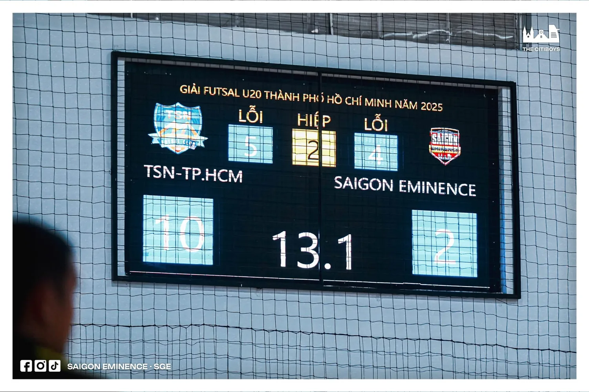
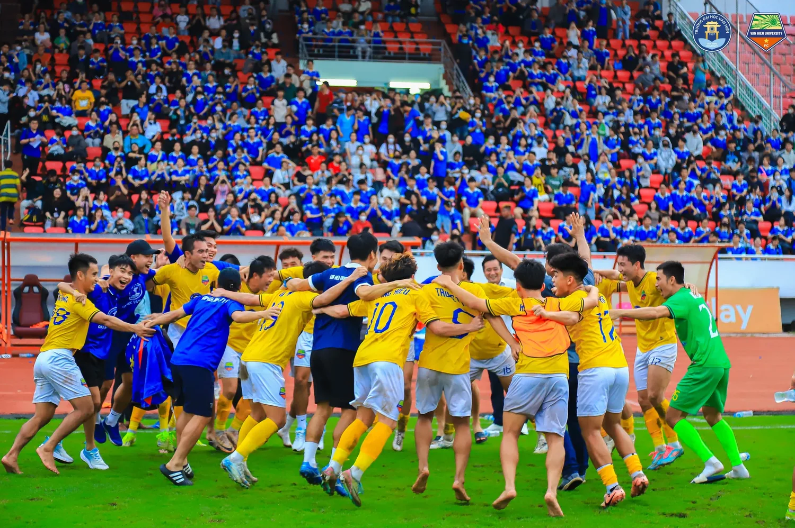
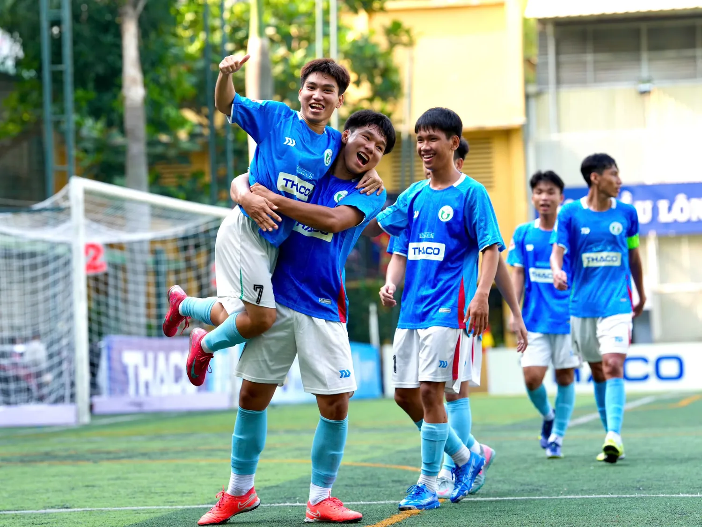

Nhìn vào bóng đá phong trào trẻ những năm gần đây, không khó để thấy mọi thứ đang thay đổi.
Các đội bóng trẻ xuất hiện nhiều hơn. Một số đội có cách tổ chức khá bài bản, có truyền thông, áo đấu, tài trợ, lịch thi đấu và thậm chí xây dựng hình ảnh gần giống một CLB chuyên nghiệp. Hệ thống giải dành cho sinh viên, futsal trẻ hay bóng đá sân cỏ phong trào cũng ngày càng được đầu tư tốt hơn.
Điều đó rõ ràng tốt cho bóng đá.
Nhưng việc thành lập một đội bóng chưa bao giờ là phần khó nhất. Khó hơn nhiều là làm sao để đội bóng ấy còn tồn tại sau một năm, ba năm, hay lâu hơn nữa.
Một tập thể có thể bắt đầu rất nhanh từ một nhóm bạn, một bộ áo, một cái tên và vài trận đấu mỗi tuần. Những tháng đầu thường rất hào hứng: thành viên đông, ai cũng muốn thi đấu, giải nào cũng muốn tham gia.
Rồi những câu hỏi thực tế bắt đầu xuất hiện. Ai đứng ra tổ chức khi người quản lý bận? Tiền sân được chia như thế nào? Khi cầu thủ bỏ tập liên tục thì xử lý ra sao? Khi thành tích không còn tốt, mọi người còn muốn ở lại không? Và quan trọng nhất: nếu một vài người chủ chốt rời đi, đội bóng còn vận hành được hay không?
Đó mới là lúc người ta bắt đầu nhìn thấy sự khác nhau giữa một đội bóng đang hoạt động và một CLB có khả năng tồn tại lâu dài.
“Gọi cầu” và cái giá của thành tích ngắn hạn
Trong bóng đá phong trào có một cụm từ rất quen: “gọi cầu”.
Hiểu đơn giản, đó là việc một đội tìm thêm những cầu thủ có chất lượng từ bên ngoài để tăng sức mạnh cho một trận hoặc một giải đấu. Bản thân chuyện này không có gì sai. Bóng đá phong trào vốn linh hoạt, việc bổ sung nhân sự đôi khi rất bình thường.
Nhưng mọi chuyện bắt đầu khác khi “gọi cầu” không còn là giải pháp tình thế mà trở thành cách một đội bóng theo đuổi thành tích.
Có những tập thể dành nhiều tháng tập luyện cùng nhau, nhưng đến một giải quan trọng lại thay đổi gần như toàn bộ bộ khung chỉ để tăng khả năng vô địch. Những cầu thủ sinh hoạt thường xuyên có thể phải ngồi ngoài để nhường chỗ cho những người được đưa về trong thời gian ngắn.
Đội mạnh hơn. Khả năng có cúp cũng cao hơn. Nhưng sau giải đấu đó thì sao?
Nếu cứ mỗi lần cần thành tích lại tìm một nhóm cầu thủ khác, rất khó để xây dựng được bản sắc hoặc một hệ thống đào tạo thật sự. Đặc biệt trong futsal trẻ và bóng đá phong trào trẻ, đây có thể trở thành một kiểu ăn xổi khá nguy hiểm.
Một cầu thủ trẻ tập cả năm nhưng đến giải lớn lại không được sử dụng sẽ rất dễ đặt câu hỏi: mình tập luyện để làm gì?
Một đội bóng có thể thắng giải nhờ những cầu thủ rất giỏi được bổ sung trong thời gian ngắn. Điều đó không có nghĩa thành tích ấy không đáng ghi nhận. Nhưng cũng không nên nhầm thành tích của một giải đấu với sự phát triển của cả một hệ thống.

Không phải đội bóng nào cũng cần ép mình trở thành “chuyên nghiệp”
Một điều khá dễ thấy ở nhiều đội bóng trẻ là hai chữ “chuyên nghiệp” đôi khi được đặt lên quá sớm.
Có đội mới hoạt động chưa lâu nhưng đã đặt mục tiêu phải lên chuyên nghiệp, phải tham gia hệ thống giải lớn, phải có hình ảnh giống một CLB chuyên nghiệp.
Tham vọng đó không sai. Vấn đề là một CLB bán chuyên không có gì đáng xấu hổ. Một đội phong trào được tổ chức tốt cũng không hề thấp hơn về giá trị chỉ vì họ chưa bước vào bóng đá chuyên nghiệp.
Nếu một đội bóng đang ở giai đoạn bán chuyên nhưng lại liên tục tự ép mình phải mang dáng vẻ của một CLB chuyên nghiệp, rất dễ xảy ra tình trạng phần bên ngoài phát triển nhanh hơn phần bên trong.
Trang mạng xã hội rất đẹp. Áo đấu rất đẹp. Lịch thi đấu dày. Giải tham dự ngày càng lớn. Nhưng nhân sự quản lý chưa ổn định, tài chính chưa có nền, cầu thủ thay đổi liên tục và gần như toàn bộ hoạt động vẫn phụ thuộc vào một vài cá nhân.
Khi đó, chữ “chuyên nghiệp” nhiều khi chỉ còn là một cái mác.
Đi lên chuyên nghiệp nên là kết quả của việc một CLB đã đủ trưởng thành, chứ không phải một mục tiêu phải đạt được bằng mọi giá. Có thể hôm nay là phong trào, ngày mai là bán chuyên, vài năm nữa mới đủ điều kiện đi xa hơn. Đi từng bước không có nghĩa là thiếu tham vọng.
Cầu thủ trẻ, cái tôi và tham vọng
Nhưng câu chuyện không chỉ nằm ở phía CLB.
Ở bóng đá phong trào trẻ, cầu thủ cũng là một yếu tố khiến sự ổn định của một đội bóng trở nên khó khăn hơn.
Cầu thủ trẻ thường có rất nhiều tham vọng. Đó là điều tốt. Nếu không có mong muốn tiến lên, rất khó để một cầu thủ phát triển. Nhưng tham vọng cũng là một con dao hai lưỡi.
Có người muốn được đá chính ngay. Có người muốn liên tục tham dự những giải lớn hơn. Có người luôn tìm một đội mạnh hơn vì nghĩ rằng đó là con đường ngắn nhất để được công nhận.
Một trận ngồi dự bị có thể khiến họ nghĩ đến chuyện rời đội. Một bất đồng nhỏ cũng có thể trở thành lý do để tìm một môi trường khác.
Điều đó không hoàn toàn là lỗi của cầu thủ. Ở độ tuổi trẻ, việc muốn thử sức và tìm cơ hội tốt hơn là rất bình thường.
Nhưng nếu một tập thể thay đổi nhân sự quá nhanh, gần như không thể xây dựng được văn hóa.
Ngược lại, CLB cũng phải tự hỏi mình đã làm gì để người trẻ muốn ở lại. Nếu một cầu thủ không nhìn thấy cơ hội phát triển, không được đối xử công bằng hoặc không hiểu mình đang nằm ở đâu trong kế hoạch của đội, việc họ tìm một nơi khác cũng là điều dễ hiểu.
Sự bền vững vì vậy không thể chỉ được yêu cầu từ một phía. CLB cần có trách nhiệm với cầu thủ, và cầu thủ cũng cần hiểu trách nhiệm của mình với tập thể.
Một đội rất mạnh hôm nay chưa chắc vẫn còn tồn tại vài năm nữa.
Thành công ngắn hạn không đồng nghĩa với sự bền vữngMột đội rất mạnh hôm nay chưa chắc vẫn còn tồn tại vài năm nữa
Bóng đá trẻ phong trào và bán chuyên đã có những trường hợp đội bóng phát triển rất nhanh.
Có lực lượng mạnh. Có thành tích. Có cầu thủ nổi bật. Có truyền thông tốt. Thậm chí có thời điểm tưởng như họ sắp bước sang một giai đoạn hoàn toàn khác.
Nhưng sau đó đội hình bắt đầu tan, hoạt động giảm dần, rồi có những tập thể bất ngờ tuyên bố dừng hoạt động hoặc giải thể.
Người bên ngoài gần như không thể biết toàn bộ nguyên nhân phía sau. Có thể là tài chính. Có thể là bất đồng giữa những người quản lý. Có thể người đứng đầu không còn khả năng tiếp tục. Có thể đội mất quá nhiều cầu thủ cùng lúc. Cũng có thể tham vọng đã lớn hơn nguồn lực mà đội bóng thực sự có.
Vì thế sẽ không công bằng nếu nhìn một đội giải thể rồi lập tức kết luận rằng họ làm sai.
Nhưng những trường hợp như vậy vẫn khiến người ta phải đặt câu hỏi: tại sao một đội bóng từng rất thành công lại có thể biến mất nhanh đến thế?
Có lẽ vì thành công trong một khoảng thời gian và khả năng tồn tại lâu dài vốn là hai chuyện khác nhau.
Khi bóng đá phong trào bắt đầu bước vào những sân chơi lớn hơn
Một điểm rất đáng chú ý hiện nay là ranh giới giữa bóng đá phong trào, bóng đá sinh viên, bán chuyên và hệ thống thi đấu chính quy đang dần gần nhau hơn.
Ngày càng có nhiều đội xuất phát từ môi trường sinh viên hoặc phong trào tham gia các giải có mức độ tổ chức và chuyên môn cao. Đây có thể là một tín hiệu rất tốt.

Một trường hợp như vậy cho thấy bóng đá sinh viên hay phong trào hoàn toàn có thể tạo ra những tập thể đủ sức tiến xa.
Nhưng cũng từ đó xuất hiện một câu hỏi khác.
Việc ngày càng có nhiều đội phong trào trẻ, bán chuyên bước vào những giải có tính chuyên nghiệp cao có phải lúc nào cũng là tín hiệu mừng?
Có thể có. Nhưng không phải chỉ cần xuất hiện ở một sân chơi lớn hơn thì một CLB đã lập tức trở thành một tổ chức chuyên nghiệp.
Quan trọng hơn là họ bước vào đó bằng cách nào.
Nếu phía sau là nhiều năm đào tạo, xây dựng nhân sự, tài chính và hệ thống vận hành thì đó là một bước tiến đáng trân trọng. Nhưng nếu mục tiêu chỉ là phải xuất hiện ở một giải lớn để chứng minh rằng đội bóng đang “đi lên”, áp lực đó đôi khi lại khiến chính CLB mất phương hướng.
Vấn đề không phải là bóng đá phong trào muốn tiến lên. Vấn đề là tiến lên bằng cách nào. Một CLB có thể bước vào hệ thống bóng đá quốc gia và đó là tín hiệu đáng mừng nếu phía sau nó là đào tạo, quản trị, tài chính và một lộ trình được chuẩn bị đủ lâu. Ngược lại, việc tham dự một giải đấu lớn hơn không tự động biến một tập thể thành CLB chuyên nghiệp.
Bóng đá sinh viên cho thấy phong trào vẫn có thể phát triển theo một hướng khác
Ở chiều ngược lại, sự phát triển của bóng đá sinh viên những năm gần đây cũng cho thấy một hướng đi rất đáng quan tâm.
Không nhất thiết phải lập tức trở thành CLB chuyên nghiệp mới gọi là phát triển.
Một hệ thống giải được tổ chức tốt, có khán giả, truyền thông, tài trợ, môi trường thi đấu cạnh tranh và duy trì đều đặn qua nhiều mùa cũng đã tạo ra giá trị rất lớn.

Những sân chơi sinh viên được tổ chức trong những năm gần đây là ví dụ khá rõ.
Ở đó, người ta vẫn có thể nhìn thấy tính phong trào, bản sắc trường học và tinh thần cộng đồng nhưng chất lượng tổ chức lại ngày càng tiến lên.
Đó cũng có thể là một hướng phát triển bền vững.
Không phải cứ rời khỏi bóng đá phong trào mới gọi là thành công.
Tiền quan trọng, nhưng tiền không giải quyết được tất cả
Một đội bóng muốn hoạt động chắc chắn cần tiền.
Tiền sân, trang phục, giải đấu, dụng cụ, nước uống, di chuyển, y tế… tất cả đều là chi phí thật.
Một nhà tài trợ hoặc một người sẵn sàng bỏ tiền cho đội có thể giúp mọi thứ phát triển nhanh hơn rất nhiều. Nhưng vẫn có một câu hỏi rất đơn giản: nếu nguồn tiền ấy dừng lại vào ngày mai thì đội bóng còn hoạt động được không?
Nếu cả hệ thống phụ thuộc hoàn toàn vào một người, nghĩa là tương lai của tập thể cũng phụ thuộc vào quyết định của người đó.
Nhà tài trợ nên giúp CLB phát triển nhanh hơn, chứ không nên là lý do duy nhất khiến CLB còn tồn tại. Đó cũng là lý do tài chính nội bộ, quỹ đội hay khả năng tự duy trì ở mức cơ bản vẫn rất quan trọng đối với bóng đá phong trào.
Phong trào không có nghĩa là làm cho có
Có lẽ đây là điều cần thay đổi nhiều nhất trong cách nhìn về bóng đá phong trào.
Một CLB không chuyên nghiệp về nghề nghiệp vẫn hoàn toàn có thể được tổ chức nghiêm túc.
Họ vẫn có thể có lịch hoạt động rõ ràng, quản lý tài chính, dữ liệu cầu thủ, nội quy, người phụ trách, hệ thống đào tạo và kế hoạch phát triển.
Một đội bóng nhỏ hoạt động đều đặn trong năm năm đôi khi có nền móng tốt hơn rất nhiều so với một đội mạnh lên cực nhanh nhưng chỉ tồn tại trong một mùa.
Sự bền vững không nằm ở việc một CLB có bao nhiêu người theo dõi hay đã vô địch bao nhiêu giải. Nó nằm ở việc khi mọi thứ không còn thuận lợi, tập thể ấy có tiếp tục được hay không.
Vậy điều gì thực sự có thể “giết” một đội bóng?
Có lẽ không phải một nguyên nhân duy nhất.
“Gọi cầu” không phải lúc nào cũng xấu. Muốn lên chuyên nghiệp không sai. Cầu thủ có tham vọng càng không phải điều đáng trách. Có tài trợ lớn cũng không phải vấn đề.
Nhưng mọi thứ trở nên nguy hiểm khi chúng đi nhanh hơn nền móng của đội bóng.
Khi thành tích được đặt cao hơn đào tạo. Khi hình ảnh phát triển nhanh hơn tổ chức. Khi cái tôi lớn hơn tập thể. Khi tham vọng chuyên nghiệp vượt quá khả năng vận hành.
Và khi một CLB dành quá nhiều thời gian để chứng minh rằng mình đang lớn mạnh, thay vì thực sự xây những thứ giúp mình tồn tại lâu hơn.
Có lẽ bóng đá trẻ Việt Nam hiện nay không thiếu đội bóng mới. Điều khó hơn là có thêm những cái tên vẫn còn ở đó sau nhiều năm.
Rose FC cũng đang tìm câu trả lời.
Rose FC cũng chưa thể tự nhận mình là một mô hình bền vững. Chúng tôi vẫn còn trẻ, vẫn thay đổi nhân sự, vẫn đang thử nhiều cách vận hành và chắc chắn còn nhiều thứ phải học.
Điều có thể làm lúc này chỉ là cố gắng xây từng phần cho chắc hơn: lịch hoạt động, trách nhiệm của thành viên, tài chính, cách quản lý và một con đường phát triển phù hợp với khả năng thực tế của CLB.
Không cần phải ép mình trở thành chuyên nghiệp chỉ để có thể nói rằng mình đang tiến lên. Nếu một ngày Rose FC có thể bước đến một cấp độ cao hơn, điều đó nên xảy ra vì tập thể đã sẵn sàng. Không phải vì cái tên của CLB cần một danh xưng lớn hơn.
Một đội bóng bền vững không phải là đội không bao giờ mất cầu thủ, không bao giờ thiếu tiền hay không bao giờ thất bại. Đó là đội bóng vẫn biết cách tiếp tục khi những chuyện ấy xảy ra.
Together We Grow. ← BACK TO NEWSROOM